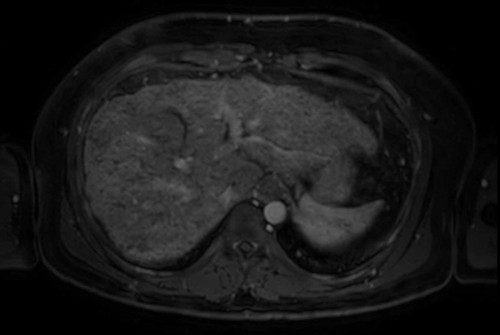

Caso Clínico
Edema associado a cirrose hepática
Faculdade de Medicina de Ribeirão Preto - USP
2025-06-05
Caso Clínico
Identificação: Homem, 49 anos, natural e procedente de Ribeirão Preto, casado, 2 filhas, vidraceiro.
Admissão: Admitido na enfermaria de Gastroenterologia proveniente de atendimento ambulatorial em 16/09/2022.
Queixa principal:
> “Dor na barriga há 1 semana.”
História da moléstia atual:
Há 1 semana, o paciente apresenta vômitos, cerca de uma vez ao dia, episódios isolados de febre (38 °C), associados a aumento do volume abdominal.
Nega sangramentos, confusão mental ou alteração do hábito intestinal.
Nega uso de outros medicamentos além dos habituais (Espironolactona, Pantoprazol, Losartana).
História Patológica Pregressa
- Cirrose hepática de etiologia alcoólica, diagnosticada desde outubro de 2021.
- Hipertensão arterial sistêmica.
- Hérnia de disco.
História Familiar
- Pai falecido por cirrose hepática, desconhece etiologia.
Hábitos
- Desde os 8 anos consome bebida alcoólica em quantidade variável. Mais recentemente, bebia cerca de 3 litros de vinho aos finais de semana e cerveja em eventos sociais (~35g/dia). Está em abstinência desde agosto de 2021.
- Nega tabagismo.
Exame Físico
Estado geral: bom estado geral, consciente e orientado, corado, hidratado, acianótico, ictérico +/4+, afebril.
Eritema palmar, telangiectasias em tronco, ginecomastia.
Aparelho respiratório: murmúrio vesicular presente bilateralmente, sem ruídos adventícios, eupneico.
Aparelho cardiovascular: ritmo cardíaco regular em dois tempos, bulhas rítmicas e normofonéticas, sem sopros. PA: 120x80 mmHg. FC: 80 bpm
Abdome: globoso, edema de parede abdominal com cacifo 2+/4+, ruídos hidroaéreos presentes e normoativos, macicez móvel presente, dolorido à palpação difusa sem sinais de irritação peritonial, sem massas ou visceromegalias (exame dificultado por tecido adiposo).
Membros inferiores: edema 2+/4+, panturrilhas livres, pulsos simétricos.
fonte: Martinez, J.B. et al., Semiologia Geral e Especializada, 2ª edição, capítulo 73.
fonte: Martinez, J.B. et al., Semiologia Geral e Especializada, 2ª edição, capítulo 73.
Hipótese Diagnóstica
Dor abdominal aguda em paciente com cirrose hepática e ascite.
Conduta Inicial
- Realização de paracentese diagnóstica
- Solicitação de exames complementares
Exames Complementares – 16/09/2022
Paracentese – Líquido Ascítico
- Leucócitos totais: 755/mm³
- Polimorfonucleares (PMN): 89% (671/mm³)
- Linfócitos: 5%
- Células mesoteliais: 2%
- Macrófagos: 4%
→ Diagnóstico: Peritonite Bacteriana Espontânea (PBE)
Exames Laboratoriais
| Exame | Valor | Referência / Comentário |
|---|---|---|
| Creatinina (mg/dL) | 0.54 | Normal |
| Ureia (mg/dL) | 19 | Normal |
| Bilirrubina T / D (mg/dL) | 3 / 2.1 | Elevada |
| Albumina (g/dL) | 2.94 | Reduzida |
| TP/INR | 1.5 | Prolongado |
| Gama GT (11–50 U/L) | 67.1 | Elevada |
| Fosfatase Alcalina (65–300) | 136.9 | Normal |
| TGO (até 38 U/L) | 52.5 | Elevada |
| TGP (até 41 U/L) | 31.9 | Normal |
| Hemoglobina (g/dL) | 11.2 | Leve anemia |
| Leucócitos | 4600 | Normal |
| Plaquetas | 112.000 | plaquetopenia |
Ressonância magnética abdominal (Setembro 2022)
Achados sugestivos de cirrose hepática:
- Morfologia hepática alterada: contornos irregulares do fígado, com aspecto nodular, compatível com cirrose hepática.
- Parênquima heterogêneo: pode indicar fibrose hepática e regeneração nodular.
- Presença de ascite: há hipersinal perihepático e ao redor dos órgãos abdominais, indicativo de acúmulo de líquido livre na cavidade abdominal.
- Aumento do lobo caudado (dificilmente avaliável sem comparação direta, mas comum em cirrose).
- Colaterais venosas não estão nitidamente visíveis nesta imagem isolada, mas costumam aparecer em casos de hipertensão portal.
Linha do Tempo da Internação
- 16/09: Internado para tratamento de Peritonite Bacteriana Espontânea (PBE). Início de Ceftriaxona EV.
- 21/09: Término da antibioticoterapia.
- 22/09: Alta hospitalar após boa evolução clínica.
Resumo Diagnóstico
Doença de base:
Cirrose hepática de etiologia alcoólica
Complicações crônicas (síndrome de hipertensão portal):
- Colaterais portossistêmicas
- Esplenomegalia
- Ascite
Descompensação aguda:
- Peritonite Bacteriana Espontânea (PBE)
Fisiopatologia do Edema na Cirrose Hepática

Fisiopatologia do Edema na Cirrose Hepática

1. Fibrose Hepática e Hipertensão Portal
Na cirrose, o tecido hepático normal é gradualmente substituído por tecido fibroso. Essa fibrose altera a arquitetura hepática e aumenta a resistência ao fluxo sanguíneo na veia porta, levando à hipertensão portal. Como consequência:
- O sangue se acumula nos vasos que drenam para o sistema porta.
- Há aumento da pressão nos capilares esplâncnicos e intestinais.
- Isso favorece o extravasamento de líquido para a cavidade abdominal, formando ascite.
2. Hipoproteinemia (Hipoalbuminemia)
O fígado fibrosado tem capacidade reduzida de sintetizar albumina, principal proteína responsável pela manutenção da pressão oncótica plasmática. A redução da albumina causa:
- Diminuição da pressão oncótica intravascular.
- Maior propensão ao extravasamento de líquido para o interstício.
- Desenvolvimento de edema periférico.
3. Vasodilatação Sistêmica e Redução do Volume Circulante Efetivo
Na cirrose ocorre vasodilatação sistêmica, especialmente no território esplâncnico, causada por substâncias vasodilatadoras como o óxido nítrico (NO). Esse processo leva a:
- Redução da resistência vascular sistêmica.
- Queda do volume arterial efetivo percebido pelo organismo.
- Ativação de mecanismos compensatórios para manter a perfusão tecidual.
4. Ativação de Mecanismos compensatórios Neuro-Hormonais
a) Sistema Nervoso Simpático (SNS)
aferência: barorreceptores detectam hipovolemia arterial efetiva (devido à vasodilatação esplâncnica).
eferências:
- A norepinefrina liberada pelas termina√ß√µes simpáticas estimula receptores ùõº‚ÇÅ-adren√©rgicos, causando vasoconstri√ß√£o renal, principalmente da arter√≠ola aferente ‚Üí isso reduz a taxa de filtra√ß√£o glomerular (TFG), contribuindo para a preserva√ß√£o de s√≥dio e água pelo organismo.
- Estimula a liberação de renina por meio de receptores β₁-adrenérgicos nas células justaglomerulares → ativa o sistema renina-angiotensina-aldosterona (SRAA) → promove retenção de sódio e água.
- Aumenta a reabsorção tubular de sódio no túbulo proximal por meio de efeitos adrenérgicos diretos.
b) Sistema Renina-Angiotensina-Aldosterona (SRAA)
- Gatilhos:
- Ativação do sistema nervoso simpático via receptores β₁-adrenérgicos nas células justaglomerulares.
- Redução da perfusão renal (pressão de perfusão diminuída nas arteríolas aferentes).
- Diminuição da concentração de sódio no túbulo distal (detectada pela mácula densa).
- Efeitos:
- Aumenta a reabsorção de sódio e água nos túbulos renais.
- Promove retenção volêmica e expansão do fluido extracelular.
c) Hormônio Antidiurético (ADH)
- Gatilhos:
- Percepção de hipovolemia arterial efetiva por barorreceptores de alta pressão (aórticos e carotídeos), mesmo na presença de volume extracelular total aumentado.
- Aumento da osmolalidade plasmática, embora na cirrose o principal estímulo seja não osmótico (hipoperfusão).
- Efeitos:
- Atua nos túbulos coletores renais, promovendo a reabsorção de água livre via canais de aquaporina-2.
- Contribui para a sobrecarga hídrica e agrava a hiponatremia dilucional.
5. Consequências Finais
A combinação de:
- Aumento da pressão hidrostática (hipertensão portal),
- Redução da pressão oncótica (hipoalbuminemia),
- Retenção de sódio e água (ativação do SRAA, SNS e ADH),
- E vasodilatação sistêmica (óxido nítrico)
leva à formação de ascite e edema periférico.
6. Ciclo Vicioso
O extravasamento contínuo de líquido piora a perfusão renal, perpetuando a ativação neuro-hormonal e agravando o quadro de retenção hídrica. Assim, estabelece-se um ciclo vicioso que sustenta e piora o edema na cirrose hepática.
Referências
José Baddini Martinez, Márcio Dantas, Júlio César Voltarelli. Semiologia geral e especializada. 2ª ed. Ed. dos Autores, 2024.
Lindor, K.D. Pathogenesis of ascites in patients with cirrhosis. Uptodate, 2023.
Costanzo, L. S. Fisiologia. 7ª edição. Elsevier, 2020.